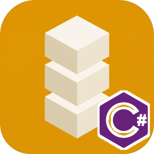

Identisure C# / .NET Client

API client for the Identisure REST API.
Documentation: identisure.github.io/api-client-csharp
Requirements
.NET 8 or later.
Supported providers
- BankID SE: auth, sign, phone auth and sign, QR verify, age verification
- BankID NO: auth, backchannel auth, sign, age verification
- Freja eID: auth, backchannel auth, sign, backchannel sign, age verification
- MitID: auth, backchannel auth, sign, age verification
- FTN (Finnish Trust Network): auth, age verification
- Vipps MobilePay: auth, backchannel auth
- Documents: upload and download documents for signing
Installation
dotnet add package Identisure.Client
Usage
using Identisure.Client;
using Identisure.Client.Models;
var client = new IdentisureClientBuilder("client_id", "client_secret")
.Environment(IdentisureEnvironment.Staging)
.Build();
var session = await client.BankIdSe.AuthAsync(new BankIdSeAuthRequest());
if (session is BankIdSePending pending)
{
Console.WriteLine($"Session ID: {pending.Id}");
var result = await client.BankIdSe.WaitForAuthAsync(pending.Id);
switch (result)
{
case BankIdSeCompleted done:
Console.WriteLine($"Authenticated: {done.Name} ({done.Ssn})");
break;
case BankIdSeFailed failed:
Console.WriteLine($"Failed: {failed.Error}");
break;
}
}
Verifying callbacks
Verify the X-Signature-SHA256 header against the raw request body before parsing it:
var valid = CallbackSignature.Verify(rawBody, signatureHeader, "hmac_secret");
Development
Prerequisites
The tests use shared fixtures from a git submodule. Clone with --recurse-submodules, or run
git submodule update --init in an existing clone.
Build
dotnet build Identisure.Client.sln
Test
dotnet test Identisure.Client.sln
Release
Set the version in src/Identisure.Client/Identisure.Client.csproj and src/Identisure.Client/Transport.cs and commit. Then push a tag:
git tag v0.1.0
git push origin v0.1.0
The release workflow checks that the tag matches the version, runs CI, publishes to NuGet and creates a GitHub release.
Other languages
Dart, Go, TypeScript/JavaScript, Java/Kotlin, PHP, Python, Ruby, Rust, Swift